Noise in steps of 6 dB
lm1_noise_in_steps_of_6_db.flac, 5.8 s, mono
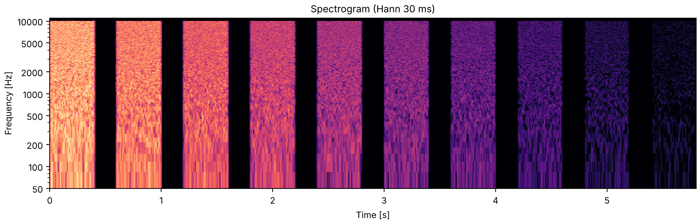
Code
sound = decibel_sounds[0]
fig, playhead = show(sound)Every sound on this page is sonore's reproduction of a demonstration from the Acoustical Society of America's Auditory Demonstrations (Houtsma, Rossing & Wagenaars, 1987), the compact disc made at the Institute for Perception Research (IPO) in Eindhoven. The demonstrations, their design and what they show are their authors' work; their booklet is published by the Eindhoven University of Technology (TU/e).
What they show. One sound can hide another: a tone is lost in noise, or behind a louder tone, or even behind a noise that comes just before or just after it. How much is hidden depends on how close the two are in frequency and in time, which is how these demonstrations measure the ear's frequency bands (the critical bands) and how long it takes in sound. Most of them are staircases: a sound repeated in steps that get quieter, against a masker that stays the same. You count the steps you can hear. Because the masker is in the same sound, the count depends on the level of each step relative to the masker, not on your volume knob. The page starts with the decibel itself, in noise stepped down by 6, 3 and 1 dB, and ends with distortion, where a sound gains frequencies it did not have.
This page is a test of sonore: can its generators rebuild each stimulus from the description in the booklet? Each example names the demonstration it reproduces, rebuilds it from the booklet's frequencies, levels and timing, and says where it departs from them: where the booklet leaves a value open, such as the level of a staircase against its masker, or where a staircase the disc plays twice is played once. What listeners hear is reported as the booklet reports it; this page has not tested any of it. Related pages: Tones and noises has the generators on their own, and Continuity and capture has the pulsation threshold (Demonstration 11).
import os
import urllib.request
import matplotlib.pyplot as plt
import numpy as np
import sonore as so
plt.rcParams.update({"font.size": 9, "axes.titlesize": 10, "figure.dpi": 100})
def fetch(path):
"""A file from the sonore repository, by its path there: the local copy when this runs from
the repository root, otherwise downloaded from GitHub to the same relative path."""
if not os.path.exists(path):
os.makedirs(os.path.dirname(path) or ".", exist_ok=True)
urllib.request.urlretrieve("https://raw.githubusercontent.com/choyun1/sonore/main/" + path, path)
return path
def finish(snd):
"""How every sound in the gallery is played: 5 ms ramps, RMS 0.1, peak at most 0.95."""
snd = snd.ramp(5e-3).normalize(rms=0.1)
return snd.normalize(peak=0.95) if snd.peak > 0.95 else sndPress play and a line follows the sound across every time axis in its plots. Click any time axis to play from that point. Start with your volume low.
To run this page yourself, open it as a notebook in Colab or download it. It is the same code, and it fetches the recordings it needs from the sonore repository.
Levels on this page are in dB re a pure tone at RMS 1, which is how so.pure_tone makes it.
so.gaussian_noise also makes its noise at RMS 1, so noise sets a band's RMS from there,
and spectrum_noise sets it from a spectrum level, the power in each 1 Hz of the band: a
band B Hz wide at spectrum level N dB has an RMS of N + 10 log10(B) dB. The examples of one
demonstration are scaled together by finish_together, so that a step at the same level in two
of them plays at the same level. The sample rate is 22.05 kHz, so the widest noise reaches
11 kHz.
FS = 22050
BROADBAND = (20, 10000) # the page's broadband noise
def envelope(n, rise, decay):
"""Linear rise and decay ramps, in seconds, over `n` samples."""
i = np.arange(n)
return np.clip(np.minimum(i / max(rise * FS, 1), (n - 1 - i) / max(decay * FS, 1)), 0, 1)
def ramped(snd, ramp=10e-3):
"""`snd` with linear ramps at both ends."""
return so.Sound(envelope(snd.n_samples, ramp, ramp) * snd.data[:, 0], FS)
def tone(freq, dur, level_db=0.0, ramp=10e-3):
"""A sine tone at `level_db` dB re RMS 1, `dur` seconds long including linear ramps."""
return ramped(so.pure_tone(dur, FS, freq, phase=-np.pi / 2), ramp).gain_db(level_db)
def noise(dur, band, level_db, rng, ramp=10e-3):
"""Gaussian noise in `band` (Hz, brick-wall) at an RMS of `level_db` dB re a pure tone's."""
snd = so.gaussian_noise(dur, FS, band=band, rng=rng).gain_db(level_db)
return ramped(snd, ramp)
def spectrum_noise(dur, band, spectrum_db, rng, ramp=10e-3):
"""Gaussian noise in `band` at a spectrum level of `spectrum_db` dB per Hz."""
return noise(dur, band, spectrum_db + 10 * np.log10(band[1] - band[0]), rng, ramp)
def place(events, dur=None):
"""Sounds added at their onset times: `events` is a list of (onset in seconds, Sound)."""
end = max(onset + snd.duration for onset, snd in events)
out = np.zeros((round((dur or end) * FS), 1))
for onset, snd in events:
i = round(onset * FS)
out[i : i + snd.n_samples] += snd.data[: len(out) - i]
return so.Sound(out, FS)
def finish_together(sounds):
"""Sounds scaled by one gain, as `finish` would scale the loudest of them, so their levels
keep their relation from one sound to the next."""
loudest = max(sounds, key=lambda snd: snd.rms)
gain = 0.1 / loudest.rms
gain = min(gain, 0.95 / max(snd.peak for snd in sounds))
return [(snd * gain).ramp(5e-3) for snd in sounds]
def show(snd, fmin=50, fmax=11000, log=True, win=30e-3):
"""A spectrogram, on a log frequency axis unless `log` is False. Returns the figure and the
panels the playhead follows."""
fig, ax = plt.subplots(figsize=(10, 3.2), layout="constrained")
stft = so.STFT(snd, win_dur=win, hop_dur=5e-3)
step = stft.f[1] - stft.f[0]
keep = (stft.f >= fmin - step) & (stft.f <= fmax + step) # one bin past each edge
top = stft.db[:, keep].max()
ax.pcolormesh(stft.t, stft.f[keep], stft.db[0][keep], vmin=top - 70, vmax=top, cmap="magma")
if log:
so.plotting.log_frequency_axis(ax)
ax.set(ylim=(fmin, fmax), ylabel="Frequency [Hz]", title=f"Spectrogram (Hann {win * 1000:g} ms)")
ax.set(xlabel="Time [s]", xlim=(0, snd.duration))
return fig, [ax]The decibel is a ratio: each step of 6 dB halves the amplitude, and 3 dB halves the power. These first examples give a feel for the steps, then pass noise through filters.
decibel_rng = np.random.default_rng(4)
def decibel_steps(step_db, n):
"""`n` bursts of broadband noise, each `step_db` dB below the one before."""
return place([(0.6 * k, noise(0.4, BROADBAND, -step_db * k, decibel_rng)) for k in range(n)])
decibel_sounds = finish_together([decibel_steps(6, 10), decibel_steps(3, 15), decibel_steps(1, 20)])lm1_noise_in_steps_of_6_db.flac, 5.8 s, mono

sound = decibel_sounds[0]
fig, playhead = show(sound)Listen for the same noise in fifteen steps of 3 dB, half as large.
Houtsma, Rossing & Wagenaars, Demonstration 4: broadband noise reduced in 15 steps of 3 dB. Ours as before; the first burst is at the same level as in the 6 dB steps.
lm1b_noise_in_steps_of_3_db.flac, 8.8 s, mono
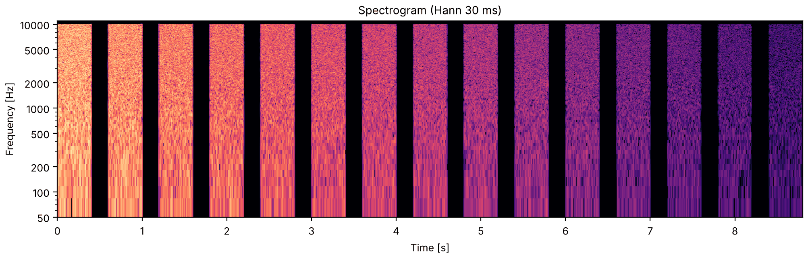
sound = decibel_sounds[1]
fig, playhead = show(sound)Listen for twenty steps of 1 dB each, close to the smallest change in level that can be heard.
Houtsma, Rossing & Wagenaars, Demonstration 4: broadband noise reduced in 20 steps of 1 dB. Ours as before.
lm1c_noise_in_steps_of_1_db.flac, 11.8 s, mono
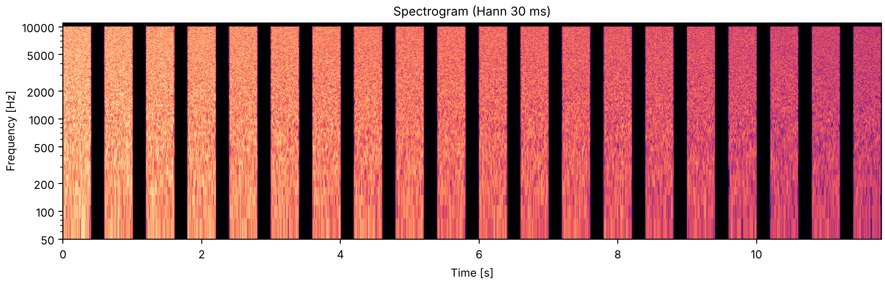
sound = decibel_sounds[2]
fig, playhead = show(sound)Listen for one sentence at four distances from a microphone: 25, 50, 100 and 200 cm. Each doubling of the distance lowers the level by 6 dB, which the booklet says holds in a room without echoes; in an ordinary room the reflections keep it from falling that fast.
Houtsma, Rossing & Wagenaars, Demonstration 4, its second part. The disc has a voice recorded
at the four distances in an anechoic room. This is a stand-in: a recorded sentence (the male
talker of the Seeing speech page) scaled by the inverse-square law with
so.distance_gain_db, 0, -6, -12 and -18 dB, which changes the level and nothing else. Ours:
0.6 s between the sentences.
lm1d_a_voice_at_four_distances.flac, 11.9 s, mono
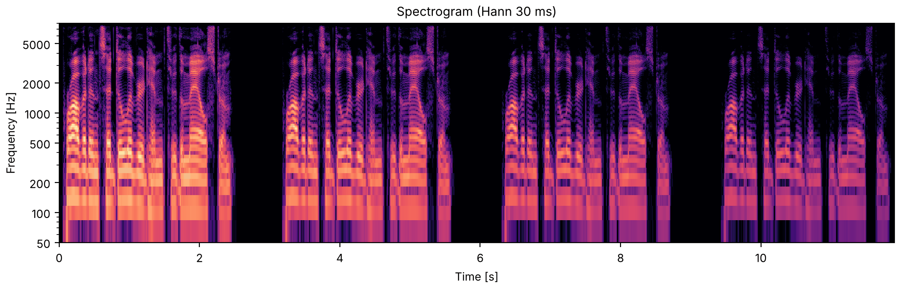
speech = so.load(fetch("docs/speech/bdl_arctic_a0131.flac")).resample(FS)
gains = so.distance_gain_db(np.array([0.25, 0.5, 1.0, 2.0]), ref=0.25)
step = speech.duration + 0.6
sound = finish(place([(step * k, speech.gain_db(g)) for k, g in enumerate(gains)]))
fig, playhead = show(sound, fmax=8000)filter_rng = np.random.default_rng(5)
FULL = (0, FS / 2)
def white_through(bands):
"""White noise, then the same spectrum level in each band of `bands` in turn."""
level = -10 * np.log10(FULL[1]) # the spectrum level of white noise at RMS 1
parts = [spectrum_noise(1.5, band, level, filter_rng) for band in [FULL, *bands]]
return place([(1.8 * k, part) for k, part in enumerate(parts)])
def third_octave(center):
"""The band one third of an octave wide around `center`."""
return (center * 2 ** (-1 / 6), center * 2 ** (1 / 6))
filter_sounds = finish_together(
[
white_through([(0, cutoff) for cutoff in (10000, 4000, 2000, 1000, 500)]),
white_through([(cutoff, FULL[1]) for cutoff in (500, 1000, 2000, 4000, 10000)]),
white_through([third_octave(center) for center in (500, 1000, 2000, 4000, 8000)]),
]
)lm2_noise_through_low-pass_filters.flac, 10.5 s, mono
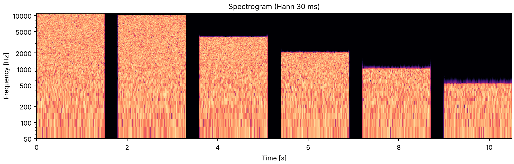
sound = filter_sounds[0]
fig, playhead = show(sound)Listen for the opposite: white noise, then high-pass filters with cutoffs at 0.5, 1, 2, 4 and 10 kHz, leaving less and less of the top.
Houtsma, Rossing & Wagenaars, Demonstration 5, with the booklet's cutoffs. Ours as before; at this page's sample rate the noise stops at 11 kHz, so the last band is 10 to 11 kHz.
lm2b_noise_through_high-pass_filters.flac, 10.5 s, mono
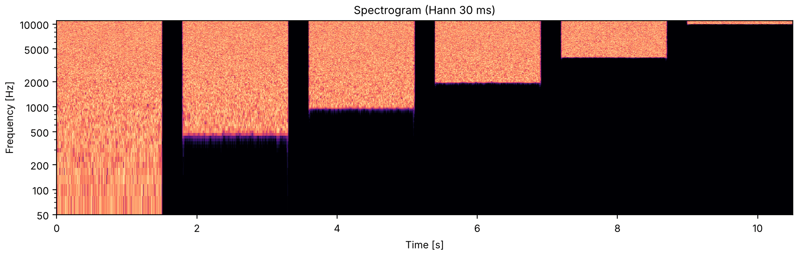
sound = filter_sounds[1]
fig, playhead = show(sound)Listen for white noise, then noise bands one third of an octave wide, centered at 0.5, 1, 2, 4 and 8 kHz, each higher in pitch than the one before.
Houtsma, Rossing & Wagenaars, Demonstration 5, with the booklet's center frequencies. Ours as before: each band spans 2^(-1/6) to 2^(1/6) times its center.
lm2c_third-octave_bands_of_noise.flac, 10.5 s, mono
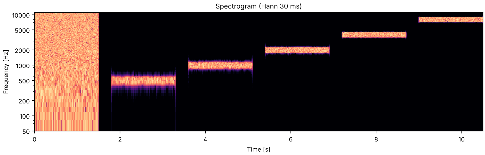
sound = filter_sounds[2]
fig, playhead = show(sound)Listen for white noise, then pink noise of the same power. White noise has the same power in every hertz, so most of its power is high; pink noise has the same power in every octave, and the booklet's figures show it falling 3 dB per octave against white noise.
Houtsma, Rossing & Wagenaars, Demonstration 5, its last part: white and pink noise with the
same power from 50 Hz to 10 kHz, as in the booklet. Ours: both noises made only in that band,
pink by so.gaussian_noise(tilt=-3), 2 s each, 0.5 s apart.
lm2d_white_and_pink_noise.flac, 4.5 s, mono
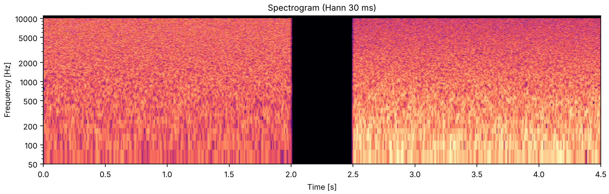
white = noise(2.0, (50, 10000), 0, filter_rng)
pink = ramped(so.gaussian_noise(2.0, FS, band=(50, 10000), tilt=-3, rng=filter_rng))
sound = finish(place([(0, white), (2.5, pink)]))
fig, playhead = show(sound)The ear analyzes sound in overlapping frequency bands. Noise masks a tone only through the band around the tone, and noise bands sound louder once they spread over more than one band.
band_rng = np.random.default_rng(2)
NOISE_SPECTRUM_DB = -50 # the noise's spectrum level, dB per Hz re the first tone step
def tone_staircase():
"""The 2000 Hz tone in 10 steps of 5 dB, starting at RMS 1."""
return place([(0.25 + 0.5 * k, tone(2000, 0.3, -5 * k)) for k in range(10)], dur=5.25)
def in_noise(band):
"""The staircase in noise over `band` at the page's spectrum level."""
return place([(0, tone_staircase()), (0, spectrum_noise(5.25, band, NOISE_SPECTRUM_DB, band_rng))])
critical_sounds = finish_together(
[tone_staircase()] + [in_noise(band) for band in (BROADBAND, (1500, 2500), (1875, 2125), (1995, 2005))]
)lm3_a_tone_staircase_alone.flac, 5.2 s, mono
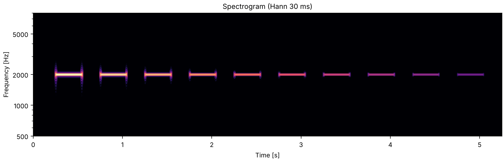
sound = critical_sounds[0]
fig, playhead = show(sound, fmin=500, fmax=8000)Listen for the staircase in broadband noise, and count how many steps you hear now. The noise masks the quieter steps.
Houtsma, Rossing & Wagenaars, Demonstration 2, with broadband noise. The booklet does not give the levels; ours: the noise from 20 Hz to 10 kHz at a spectrum level 50 dB below the first step of the tone, so the last step is 5 dB above the noise's spectrum level.
lm3b_the_staircase_in_broadband_noise.flac, 5.2 s, mono
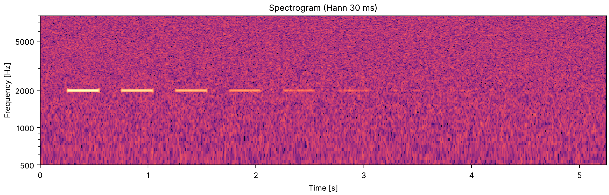
sound = critical_sounds[1]
fig, playhead = show(sound, fmin=500, fmax=8000)Listen for the staircase in noise only 1000 Hz wide, centered on the tone. The noise is much quieter, since it has the same spectrum level over a narrower band.
Houtsma, Rossing & Wagenaars, Demonstration 2: noise with a bandwidth of 1000 Hz, at the same spectrum level, as in the booklet. Ours: from 1500 to 2500 Hz.
lm3c_the_staircase_in_noise_1000_hz_wide.flac, 5.2 s, mono
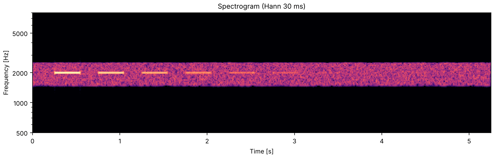
sound = critical_sounds[2]
fig, playhead = show(sound, fmin=500, fmax=8000)Listen for the staircase in noise 250 Hz wide. The booklet gives the critical band at 2000 Hz as about 280 Hz, and expects more steps to be heard once the noise is narrower than that.
Houtsma, Rossing & Wagenaars, Demonstration 2: a bandwidth of 250 Hz. Ours: from 1875 to 2125 Hz.
lm3d_the_staircase_in_noise_250_hz_wide.flac, 5.2 s, mono
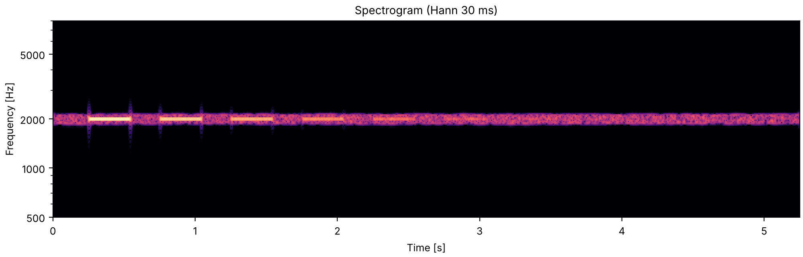
sound = critical_sounds[3]
fig, playhead = show(sound, fmin=500, fmax=8000)Listen for the staircase in noise only 10 Hz wide, heard as a wavering tone of its own.
Houtsma, Rossing & Wagenaars, Demonstration 2: a bandwidth of 10 Hz. Ours: from 1995 to 2005 Hz.
lm3e_the_staircase_in_noise_10_hz_wide.flac, 5.2 s, mono
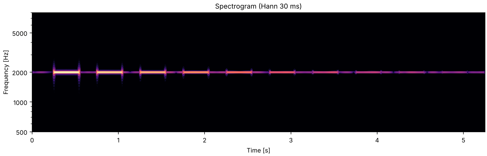
sound = critical_sounds[4]
fig, playhead = show(sound, fmin=500, fmax=8000)Listen for eight pairs of noise bands. In each pair a reference band comes first, then a test band with the same power, wider each time. Compare their loudness: the booklet says the test band begins to sound louder once it is wider than a critical band.
Houtsma, Rossing & Wagenaars, Demonstration 3. A noise band centered on 1000 Hz from 930 to 1075 Hz, as in the booklet, is the reference, and the first test band is the same. The booklet calls this band 1.5% wide; it is 145 Hz, about 15% of its center, and the booklet then widens the test band in 7 steps of 15%. Ours: test bands 1 to 8 times 145 Hz wide, centered on 1000 Hz on a log scale like the reference, all at the same RMS, 0.5 s each with 10 ms ramps, 0.2 s between the two bands of a pair and 0.6 s between pairs, and one pass where the disc plays two.
lm4_noise_bands_of_growing_width_at_one_power.flac, 14.0 s, mono
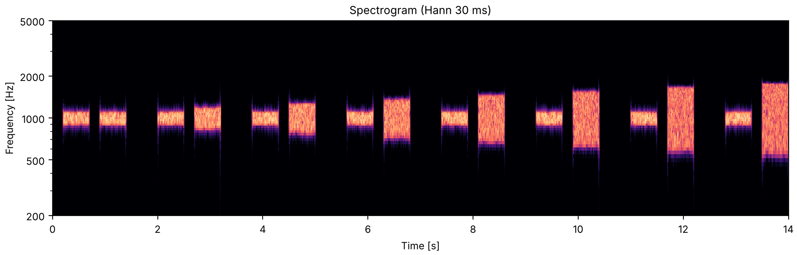
loudness_rng = np.random.default_rng(3)
def centered_band(width, center=1000.0):
"""The band `width` Hz wide whose edges have `center` as their geometric mean."""
low = (-width + np.sqrt(width**2 + 4 * center**2)) / 2
return (low, low + width)
reference = (930, 1075)
pairs = []
for k in range(1, 9):
onset = 0.2 + 1.8 * (k - 1)
pairs.append((onset, noise(0.5, reference, 0, loudness_rng)))
pairs.append((onset + 0.7, noise(0.5, centered_band(145 * k), 0, loudness_rng)))
sound = finish(place(pairs))
fig, playhead = show(sound, fmin=200, fmax=5000)A brief sound is harder to hear than a long one at the same level, and a tone can be masked by a noise that is not there at the same time, one that ends just before it or begins just after.
integration_rng = np.random.default_rng(8)
BURST_LEVELS = [0, -16, -20, -24, -28, -32, -36, -40]
MASKER_DB = -45
def burst_staircase(burst):
"""Broadband noise bursts `burst` seconds long at the booklet's 8 levels, in the masker."""
period = burst + 0.5 if burst >= 0.1 else 0.6
ramp = min(0.5e-3, burst / 4)
bursts = [
(0.5 + period * k, noise(burst, BROADBAND, level, integration_rng, ramp))
for k, level in enumerate(BURST_LEVELS)
]
dur = 0.5 + 8 * period + 0.3
masker = noise(dur, BROADBAND, MASKER_DB, integration_rng, ramp=20e-3)
return place([(0, place(bursts, dur)), (0, masker)])
DURATIONS = [1.0, 0.3, 0.1, 0.03, 0.01, 0.003, 0.001]
integration_sounds = finish_together([burst_staircase(burst) for burst in DURATIONS])lm5_noise_bursts_of_1_s_in_noise.flac, 12.8 s, mono
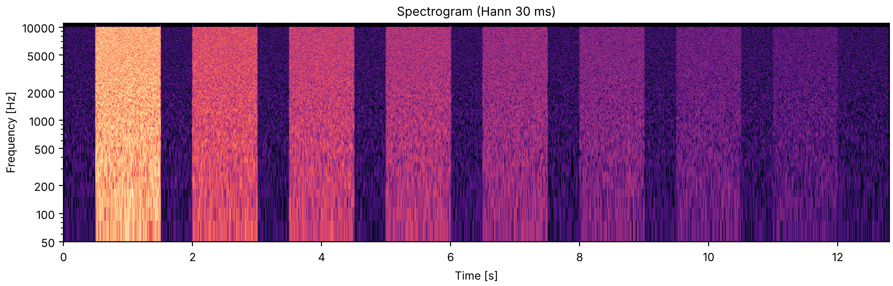
sound = integration_sounds[0]
fig, playhead = show(sound)Listen for the same staircase with bursts of 300 ms.
Houtsma, Rossing & Wagenaars, Demonstration 8: bursts of 300 ms. Ours as before.
lm5b_bursts_of_300_ms.flac, 7.2 s, mono
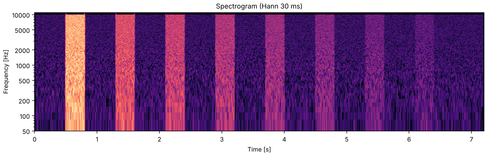
sound = integration_sounds[1]
fig, playhead = show(sound)Listen for bursts of 100 ms. The booklet says hearing averages energy over about 200 ms, so bursts shorter than that sound softer at the same level.
Houtsma, Rossing & Wagenaars, Demonstration 8: bursts of 100 ms. Ours as before.
lm5c_bursts_of_100_ms.flac, 5.6 s, mono
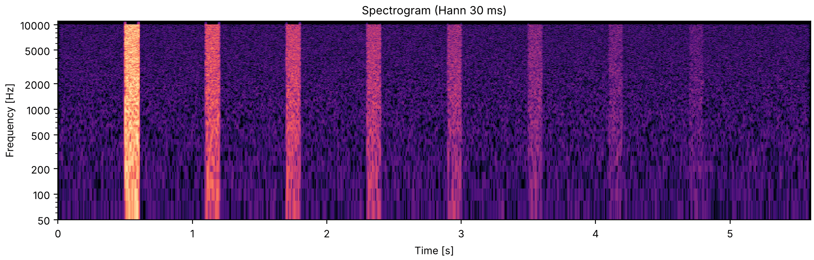
sound = integration_sounds[2]
fig, playhead = show(sound)Listen for bursts of 30 ms.
Houtsma, Rossing & Wagenaars, Demonstration 8: bursts of 30 ms. Ours as before.
lm5d_bursts_of_30_ms.flac, 5.6 s, mono
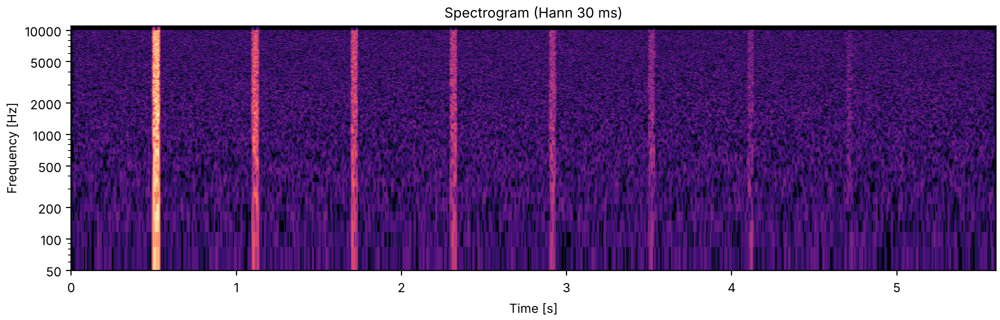
sound = integration_sounds[3]
fig, playhead = show(sound)Listen for bursts of 10 ms, short enough to sound like clicks.
Houtsma, Rossing & Wagenaars, Demonstration 8: bursts of 10 ms. Ours as before.
lm5e_bursts_of_10_ms.flac, 5.6 s, mono
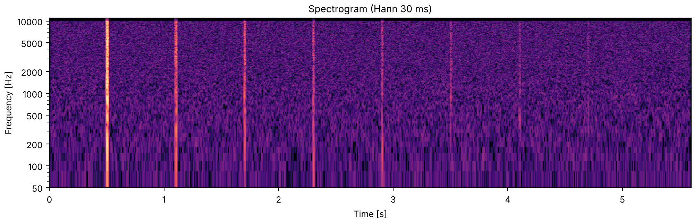
sound = integration_sounds[4]
fig, playhead = show(sound)Listen for bursts of 3 ms.
Houtsma, Rossing & Wagenaars, Demonstration 8: bursts of 3 ms. Ours as before, with ramps of 0.5 ms.
lm5f_bursts_of_3_ms.flac, 5.6 s, mono
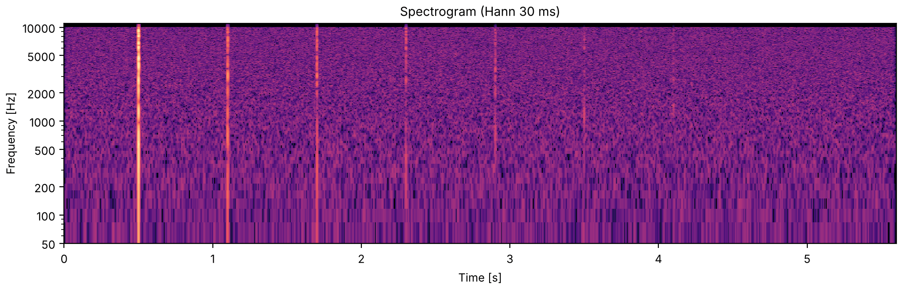
sound = integration_sounds[5]
fig, playhead = show(sound)Listen for bursts of 1 ms, the shortest.
Houtsma, Rossing & Wagenaars, Demonstration 8: bursts of 1 ms. Ours as before, with ramps of 0.25 ms.
lm5g_bursts_of_1_ms.flac, 5.6 s, mono
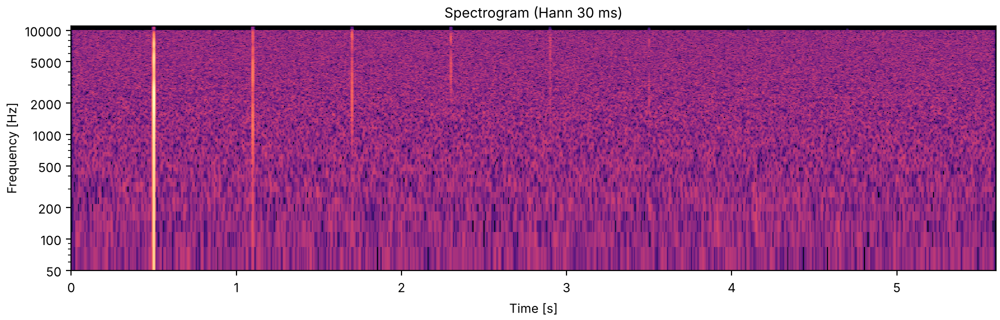
sound = integration_sounds[6]
fig, playhead = show(sound)temporal_rng = np.random.default_rng(10)
SIGNAL_LEVELS = [-4 * k for k in range(10)]
def blip(level_db):
"""The 10 ms signal: a 2000 Hz tone with 2 ms ramps."""
return tone(2000, 0.01, level_db, ramp=2e-3)
def masker_burst():
"""The 250 ms noise burst from 1900 to 2100 Hz, at RMS 1."""
return noise(0.25, (1900, 2100), 0, temporal_rng, ramp=2e-3)
def masked_staircase(gap, before):
"""Each step: the signal and the noise `gap` seconds apart, the noise after the signal
(backward masking) or `before` it (forward masking), then the noise alone."""
events = []
for k, level in enumerate(SIGNAL_LEVELS):
onset = 0.2 + 1.2 * k
if before:
events += [(onset, masker_burst()), (onset + 0.25 + gap, blip(level))]
else:
events += [(onset, blip(level)), (onset + 0.01 + gap, masker_burst())]
events.append((onset + 0.6, masker_burst()))
return place(events, dur=12.2)
alone = place([(0.2 + 0.6 * k, blip(level)) for k, level in enumerate(SIGNAL_LEVELS)], dur=6.2)
temporal_sounds = finish_together(
[alone]
+ [masked_staircase(gap, before=False) for gap in (0.1, 0.02, 0.0)]
+ [masked_staircase(gap, before=True) for gap in (0.1, 0.02, 0.0)]
)lm6_a_brief_tone_staircase_alone.flac, 6.2 s, mono
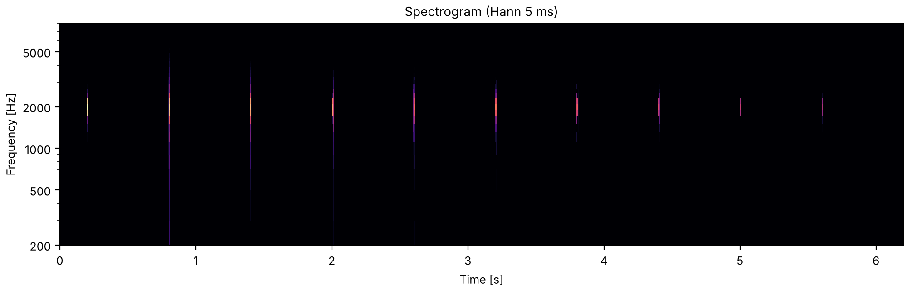
sound = temporal_sounds[0]
fig, playhead = show(sound, fmin=200, fmax=8000, win=5e-3)Listen for the brief tone followed after 100 ms by a burst of noise, alternating with the noise alone. Count the steps in which you hear the tone before the noise.
Houtsma, Rossing & Wagenaars, Demonstration 10, backward masking: the signal, then after a gap of 100 ms a 250 ms noise burst from 1900 to 2100 Hz, alternating with the noise alone, as in the booklet. The booklet does not give the level of the noise against the signal; ours: the first step of the tone at the noise's RMS. Ours also: the noise alone 0.6 s after each step begins, a step every 1.2 s, and one pass where the disc plays two.
lm6b_noise_100_ms_after_the_tone.flac, 12.2 s, mono
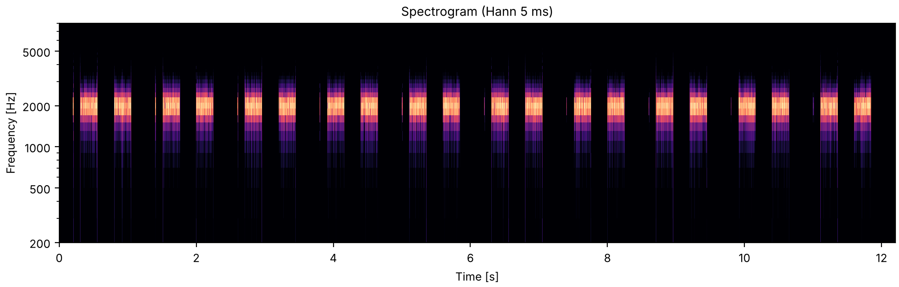
sound = temporal_sounds[1]
fig, playhead = show(sound, fmin=200, fmax=8000, win=5e-3)Listen for the same with a gap of 20 ms between the tone and the noise.
Houtsma, Rossing & Wagenaars, Demonstration 10, backward masking with a gap of 20 ms. The booklet reports that a noise can mask a tone that ends up to 10 ms before it begins. Ours as before.
lm6c_noise_20_ms_after_the_tone.flac, 12.2 s, mono
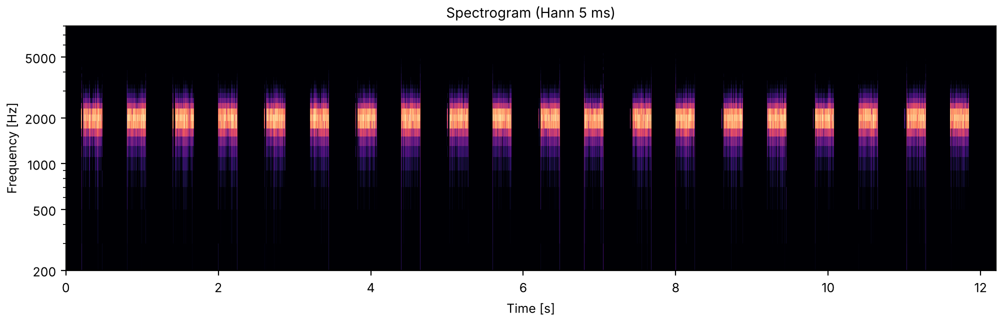
sound = temporal_sounds[2]
fig, playhead = show(sound, fmin=200, fmax=8000, win=5e-3)Listen for the noise starting the moment the tone ends.
Houtsma, Rossing & Wagenaars, Demonstration 10, backward masking with no gap. Ours as before.
lm6d_noise_right_after_the_tone.flac, 12.2 s, mono
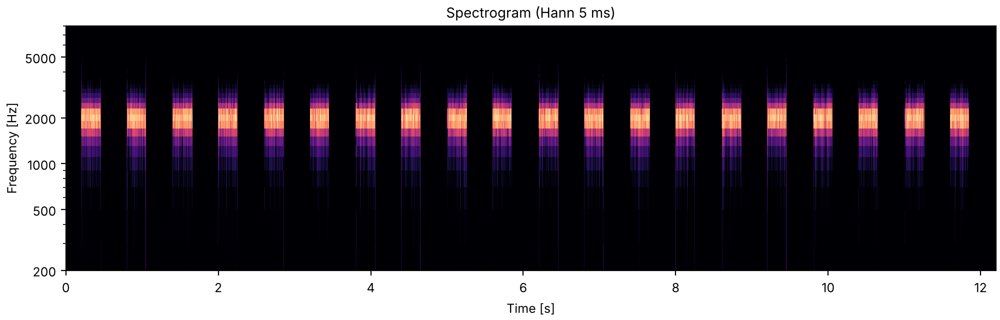
sound = temporal_sounds[3]
fig, playhead = show(sound, fmin=200, fmax=8000, win=5e-3)Listen for the noise first and the brief tone 100 ms after it ends, alternating with the noise alone. Count the steps in which you hear the tone after the noise.
Houtsma, Rossing & Wagenaars, Demonstration 10, forward masking with a gap of 100 ms. The booklet reports forward masking up to about 20 or 30 ms after the masker ends. Ours as before.
lm6e_the_tone_100_ms_after_the_noise.flac, 12.2 s, mono
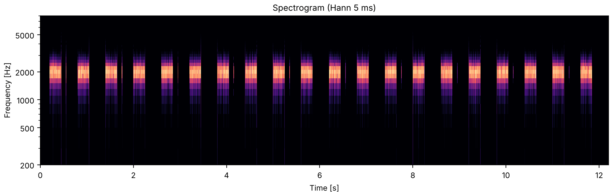
sound = temporal_sounds[4]
fig, playhead = show(sound, fmin=200, fmax=8000, win=5e-3)Listen for the tone 20 ms after the noise.
Houtsma, Rossing & Wagenaars, Demonstration 10, forward masking with a gap of 20 ms. Ours as before.
lm6f_the_tone_20_ms_after_the_noise.flac, 12.2 s, mono
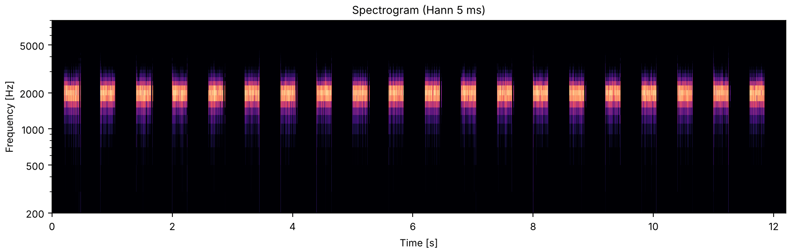
sound = temporal_sounds[5]
fig, playhead = show(sound, fmin=200, fmax=8000, win=5e-3)Listen for the tone starting the moment the noise ends.
Houtsma, Rossing & Wagenaars, Demonstration 10, forward masking with no gap. Ours as before.
lm6g_the_tone_right_after_the_noise.flac, 12.2 s, mono
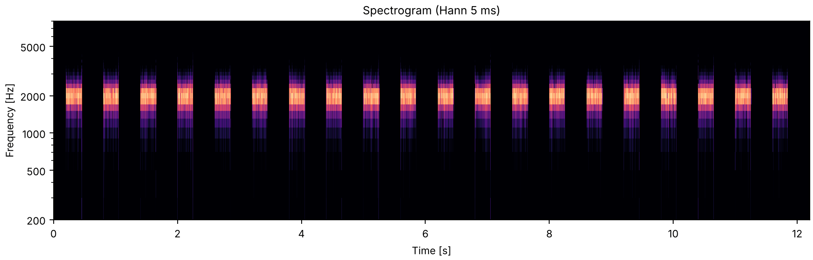
sound = temporal_sounds[6]
fig, playhead = show(sound, fmin=200, fmax=8000, win=5e-3)A tone masks tones above it in frequency more than tones below it. Masking can also shift the pitch of the tone it partly hides.
TEST_LEVELS = [0] + [-15 - 5 * k for k in range(9)]
def pulsed(masker_freq, test_freq):
"""Masker pulses of 200 ms every 300 ms, the test tone added to every other one."""
events = []
for k, level in enumerate(TEST_LEVELS):
events.append((0.6 * k, tone(masker_freq, 0.2)))
events += [(0.6 * k + 0.3, tone(masker_freq, 0.2)), (0.6 * k + 0.3, tone(test_freq, 0.2, level))]
return place(events)
asymmetry_sounds = finish_together([pulsed(1200, 2000), pulsed(2000, 1200)])lm7_a_low_tone_masking_a_high_one.flac, 5.9 s, mono
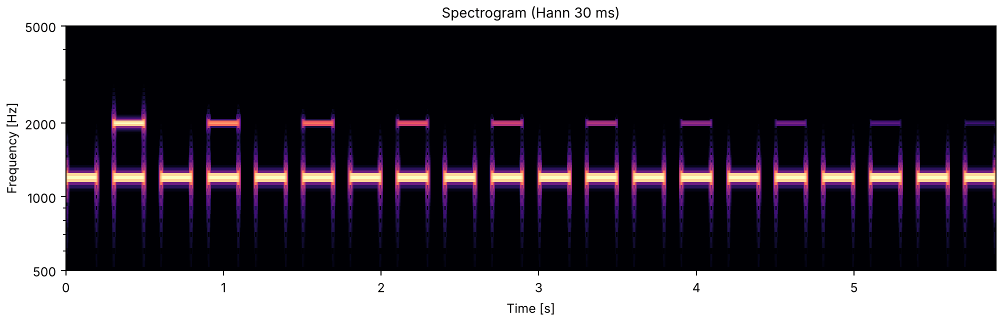
sound = asymmetry_sounds[0]
fig, playhead = show(sound, fmin=500, fmax=5000)Listen for the roles swapped: a pulsing 2000 Hz tone, and a 1200 Hz tone joining every other pulse. Compare the count with the last example.
Houtsma, Rossing & Wagenaars, Demonstration 9, with the 2000 Hz masker and the 1200 Hz test tone. Ours as before.
lm7b_a_high_tone_masking_a_low_one.flac, 5.9 s, mono
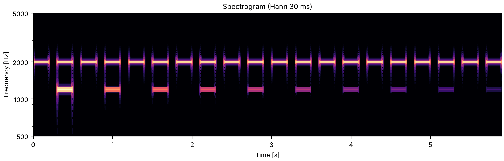
sound = asymmetry_sounds[1]
fig, playhead = show(sound, fmin=500, fmax=5000)Listen for a 1000 Hz tone in a noise below it, then the same tone alone, three times; then the two tones with no noise, twice. The booklet reports the tone in the noise as slightly higher in pitch, and asks whether you agree; without the noise the two are the same.
Houtsma, Rossing & Wagenaars, Demonstration 14, after Terhardt & Fastl (1971): a 1000 Hz tone of 500 ms, partly masked by noise low-pass filtered at 900 Hz, alternating with the same tone without noise, as in the booklet. The booklet does not give the noise's level or timing; ours: noise from 20 to 900 Hz at an RMS 20 dB above the tone, from 0.1 s before the tone to 0.1 s after it, tones 0.4 s apart, and 20 ms ramps.
lm8_pitch_in_a_noise_below_the_tone.flac, 8.7 s, mono
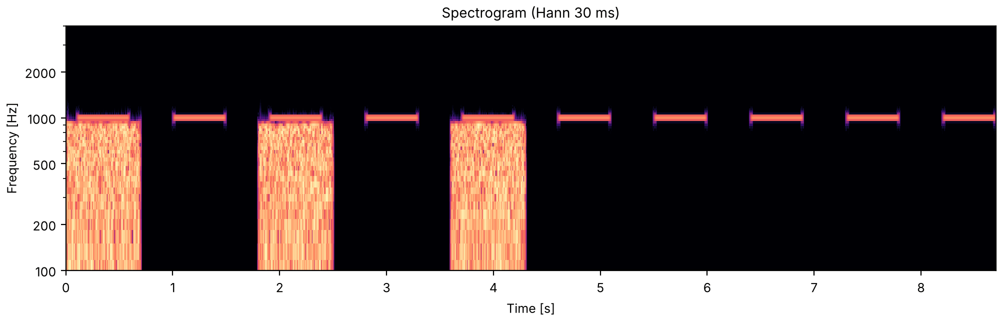
shift_rng = np.random.default_rng(14)
events = []
for k in range(5):
onset = 1.8 * k
if k < 3:
events.append((onset, noise(0.7, (20, 900), 20, shift_rng, ramp=20e-3)))
events += [(onset + 0.1, tone(1000, 0.5, ramp=20e-3)), (onset + 1.0, tone(1000, 0.5, ramp=20e-3))]
sound = finish(place(events))
fig, playhead = show(sound, fmin=100, fmax=4000)Listen for pairs of tones, the second 30 dB louder than the first, at 200, 500, 1000, 3000 and 4000 Hz. Compare the pitch within each pair. The booklet reports that for most pairs a slight change of pitch is audible, and that the effect is small and varies from listener to listener.
Houtsma, Rossing & Wagenaars, Demonstration 12: tone bursts of 500 ms at 200, 500, 1000, 3000 and 4000 Hz, the second of each pair 30 dB above the first, as in the booklet. The disc begins with a 200 Hz tone to be set just audible, and plays the first tone of each pair 5 dB above it; a page cannot set your playback level, so the calibration tone is here only as a reference, 5 dB below the quieter tones. The booklet plays six pairs; ours: one pair at each of its five frequencies, 0.3 s apart within a pair and 2 s from pair to pair, with 20 ms ramps.
lm9_pitch_at_two_levels.flac, 10.8 s, mono
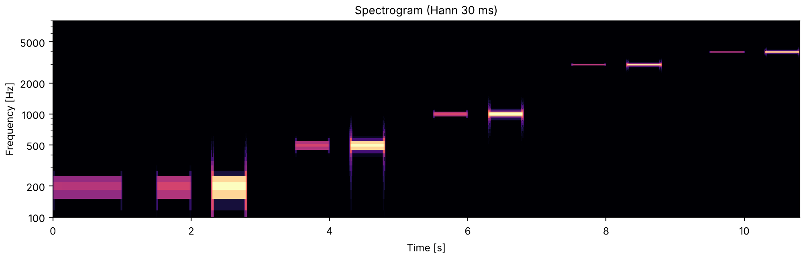
events = [(0, tone(200, 1.0, -35, ramp=20e-3))]
for k, freq in enumerate((200, 500, 1000, 3000, 4000)):
onset = 1.5 + 2.0 * k
events += [(onset, tone(freq, 0.5, -30, ramp=20e-3)), (onset + 0.8, tone(freq, 0.5, 0, ramp=20e-3))]
sound = finish(place(events))
fig, playhead = show(sound, fmin=100, fmax=8000)Distortion in a system the sound passes through adds frequencies the sound did not have: harmonics of each tone, and for two tones, tones at sums and differences of their frequencies. The booklet notes that this demonstration repeats one by W. M. Hartmann on the Harvard demonstration tapes (1978).
def compressor(x):
"""A symmetric compressor: an odd function, so it adds only odd harmonics."""
return np.tanh(4 * x) / np.tanh(4)
def rectifier(x):
"""A half-wave rectifier, its mean removed: it adds even harmonics."""
y = np.maximum(x, 0)
return y - y.mean()
def sines(freqs, dur):
"""Sines at `freqs`, added and scaled to a peak of 1."""
t = np.arange(round(dur * FS)) / FS
x = sum(np.sin(2 * np.pi * f * t) for f in freqs)
return x / np.max(np.abs(x))
def level_at(x, freq):
"""The RMS level in dB of the component of `x` at `freq` (a whole number of cycles in `x`)."""
t = np.arange(len(x)) / FS
amplitude = 2 * np.abs(np.mean(x * np.exp(-2j * np.pi * freq * t)))
return 20 * np.log10(amplitude / np.sqrt(2))
def with_pointer(distorted, pointer_freq):
"""The distorted tone (at RMS 1) and a pure tone at the level of its `pointer_freq` component,
alternating twice."""
distorted = distorted / np.sqrt(np.mean(distorted**2))
snd = ramped(so.Sound(distorted, FS), 20e-3)
pointer = tone(pointer_freq, 1.0, level_at(distorted, pointer_freq), ramp=20e-3)
return place([(0, snd), (1.3, pointer), (2.6, snd), (3.9, pointer)])lm10_a_tone_through_a_compressor.flac, 4.9 s, mono
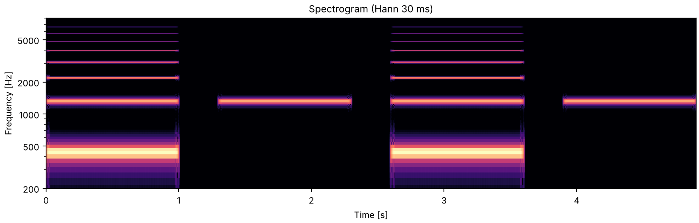
sound = finish(with_pointer(compressor(sines([440], 1.0)), 1320))
fig, playhead = show(sound, fmin=200, fmax=8000)Listen for a 440 Hz tone through a half-wave rectifier, which keeps only its positive half-cycles, alternating with a pointer at its second harmonic, 880 Hz. The rectifier is not symmetric, and the booklet says it adds strong even harmonics.
Houtsma, Rossing & Wagenaars, Demonstration 33: a 440 Hz tone through a half-wave rectifier, alternating with its second harmonic, as in the booklet. Ours as before.
lm10b_a_tone_through_a_rectifier.flac, 4.9 s, mono
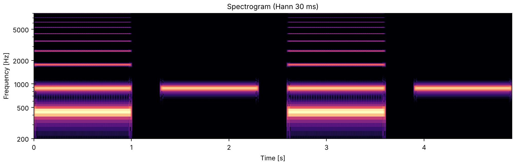
sound = finish(with_pointer(rectifier(sines([440], 1.0)), 880))
fig, playhead = show(sound, fmin=200, fmax=8000)Listen for two tones, 700 and 1000 Hz, through the symmetric compressor, alternating with a pointer at 400 Hz, the cubic difference tone 2 x 700 - 1000. Listen for the low tone in the distorted pair.
Houtsma, Rossing & Wagenaars, Demonstration 33: tones of 700 and 1000 Hz through a symmetric compressor, alternating with a 400 Hz pointer, as in the booklet. Ours as before: the two tones at equal amplitudes, their sum scaled to a peak of 1 before the compressor.
lm10c_two_tones_through_a_compressor.flac, 4.9 s, mono
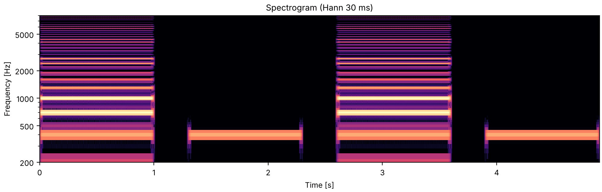
sound = finish(with_pointer(compressor(sines([700, 1000], 1.0)), 400))
fig, playhead = show(sound, fmin=200, fmax=8000)def phase_sweep(dur=6.0):
"""440 Hz plus 880 Hz, the phase of the 880 Hz going from -90 to +90 degrees over `dur`."""
t = np.arange(round(dur * FS)) / FS
phase = np.pi * (t / dur - 0.5)
return np.sin(2 * np.pi * 440 * t) + np.sin(2 * np.pi * 880 * t + phase)
sweep = phase_sweep()lm10d_the_phase_of_a_harmonic_moving.flac, 6.0 s, mono
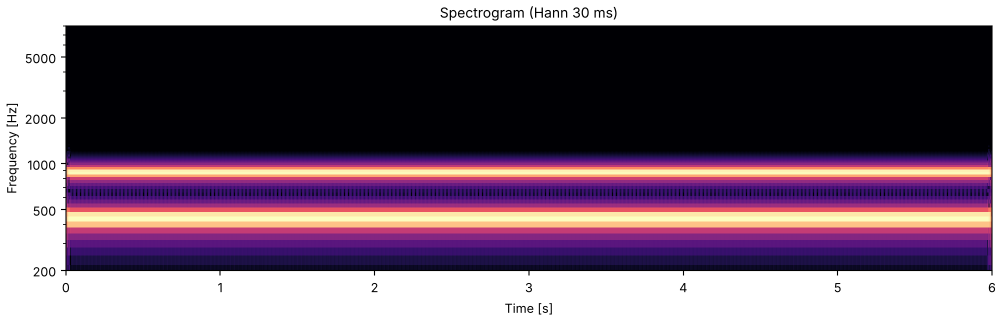
sound = finish(ramped(so.Sound(sweep, FS), 20e-3))
fig, playhead = show(sound, fmin=200, fmax=8000)Listen for the same tone and harmonic through a square law. Now the booklet says the quality of the tone changes as the phase moves: the distortion adds a component at 440 Hz (880 - 440), whose sum with the 440 Hz tone depends on the phase.
Houtsma, Rossing & Wagenaars, Demonstration 33: the same tones through a square-law device, as in the booklet. The booklet does not give the device; ours: y = x + x^2 / 2 for the sum x of the two sines, its mean removed.
lm10e_the_phase_moving_through_a_square_law.flac, 6.0 s, mono
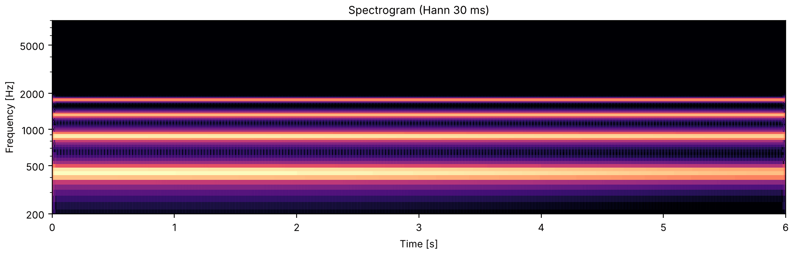
squared = sweep + sweep**2 / 2
sound = finish(ramped(so.Sound(squared - squared.mean(), FS), 20e-3))
fig, playhead = show(sound, fmin=200, fmax=8000)The papers were checked for their publication details only; the parameters on this page come from the booklet, and those marked as ours are choices made for this page.